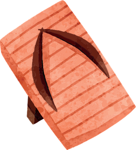

JURNAL DE STUDIU · NIVEL A2
Hai să învățăm
Hai să învățăm
japoneza împreună.
Pas cu pas, cu explicații în română, exemple în japoneză și romaji.
Descoperă lecțiile ♡ Despre jurnal




Începem călătoria
Exersează în ritmul tău


Despre acest jurnal
Îmi documentez călătoria de învățare a limbii japoneze, de la A2 încolo. Hai să descoperim împreună limba și cultura Japoniei!